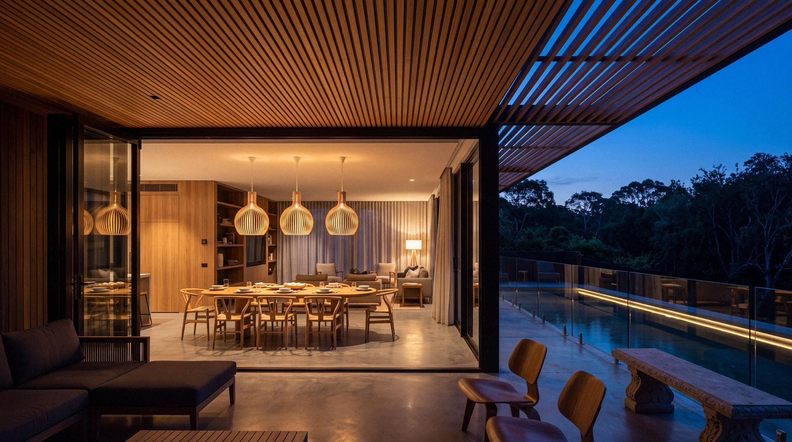

Archviz — Juscelio Diaz
-
Final 02.1 Terrace and infinity pool Coastal Villa, Italy · Stills · Interactive presentation -
Final 02.7 Arcade to the terrace Coastal Villa, Italy · Stills · Interactive presentation -
Final 03.1 Breakwater aerial Waterfront Towers · Unreal Engine · Masterplan & amenity -
Unreal Engine 03.2 Podium pool terrace Waterfront Towers · Unreal Engine · Masterplan & amenity -
Unreal Engine 04.1 Pergola and lap pool Tropical Residence · Unreal Engine · Exterior & interior -
Unreal Engine 04.2 Living, day Tropical Residence · Unreal Engine · Exterior & interior -
Unreal Engine 04.4 Aerial to the beach Tropical Residence · Unreal Engine · Exterior & interior -
Unreal Engine 04.5 Kitchen Tropical Residence · Unreal Engine · Exterior & interior -
Day 
Blue hour 05.1 Dining, day Timber House · Stills · Interiors, day to dusk -
Stills 05.2 Dining, blue hour Timber House · Stills · Interiors, day to dusk -
Stills 05.3 Kitchen to the garden Timber House · Stills · Interiors, day to dusk -
Stills 05.4 Galley kitchen Timber House · Stills · Interiors, day to dusk -
Stills 06.2 Stair and atrium garden Interior Studies · Stills · Residential, hospitality & workplace -
Stills 06.3 Living to the courtyard Interior Studies · Stills · Residential, hospitality & workplace -
Stills 06.5 Restaurant, day Interior Studies · Stills · Residential, hospitality & workplace -
Stills 06.7 Dining along the façade Interior Studies · Stills · Residential, hospitality & workplace -
Stills 06.10 Workplace, mezzanine Interior Studies · Stills · Residential, hospitality & workplace -
Stills 06.12 Reception at dusk Interior Studies · Stills · Residential, hospitality & workplace
Lifestyle scenes
-
Stills 07.1 Pool deck under the green tower Garden Tower Resort · Stills · Lifestyle scenes, AI-assisted -
Stills 07.2 Pool at dusk Garden Tower Resort · Stills · Lifestyle scenes, AI-assisted -
Stills 08.1 Terrace and lap pool Beach House · Stills · Lifestyle scenes, AI-assisted -
Stills 08.2 Family by the pool Beach House · Stills · Lifestyle scenes, AI-assisted -
Stills 08.3 Floating in the pool Beach House · Stills · Lifestyle scenes, AI-assisted -
Stills 08.4 Path to the beach Beach House · Stills · Lifestyle scenes, AI-assisted -
Stills 08.5 Aerial to the shore Beach House · Stills · Lifestyle scenes, AI-assisted -
Stills 09.1 Stone bar in the garden Garden Bar · Stills · Lifestyle scenes, AI-assisted -
Stills 09.2 Conversation at the bar Garden Bar · Stills · Lifestyle scenes, AI-assisted -
Stills 09.3 Stool detail Garden Bar · Stills · Lifestyle scenes, AI-assisted